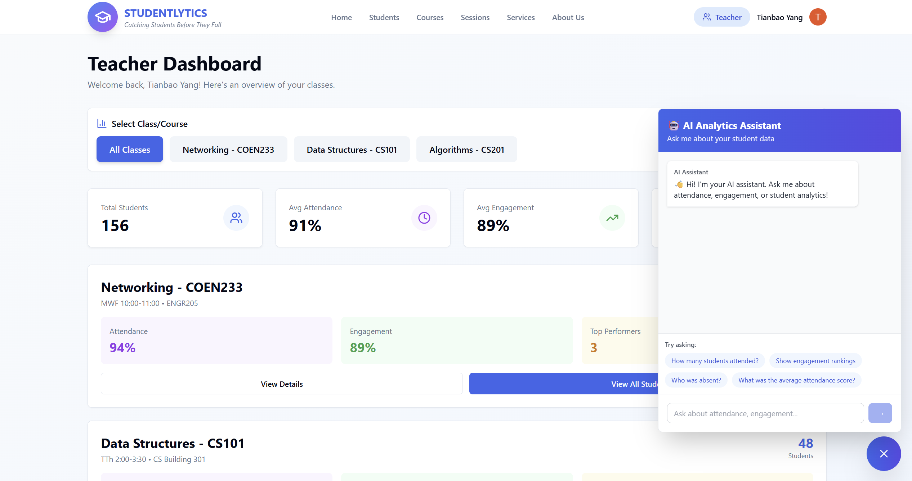

01 / Cloud, data, and product engineering
Studentlytics
An AWS GenAI engagement analytics platform for attendance insights, engagement scoring, and AI-assisted support.
- Won 1st Place HighView Prize among 254 participants and reduced instructor effort by 80%.
- Selected by HighView for continued development and deployment; deployment is underway.
- Built a React and TypeScript dashboard on Amplify with FastAPI services on EC2.
- Connected Bedrock, DynamoDB, S3, Lambda, Rekognition, OAuth, and JWT-based role access.
React | TypeScript | FastAPI | AWS | DynamoDB | Bedrock